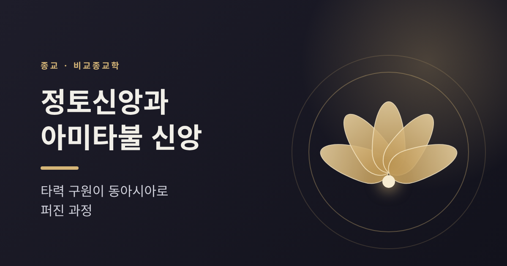
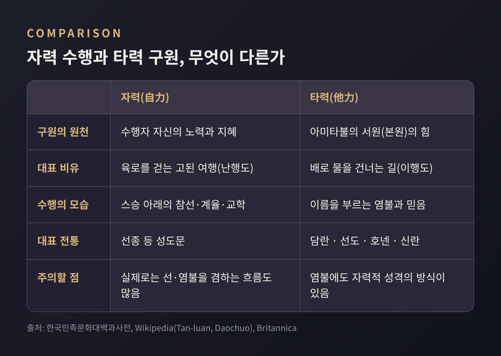
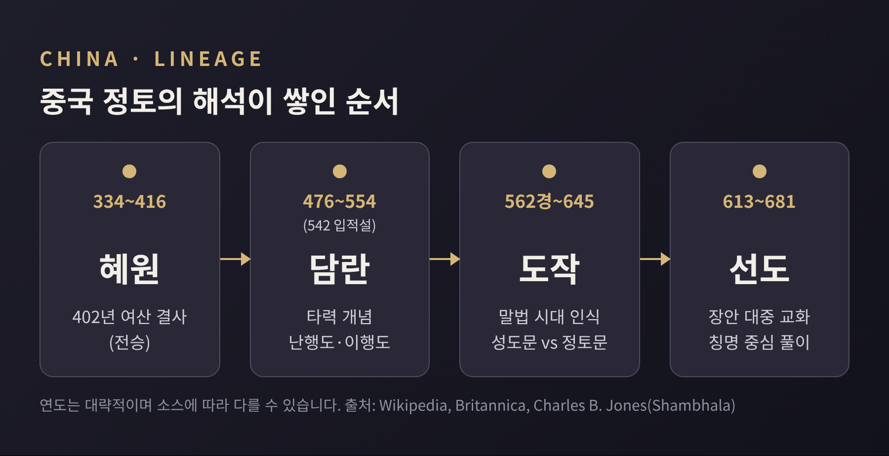
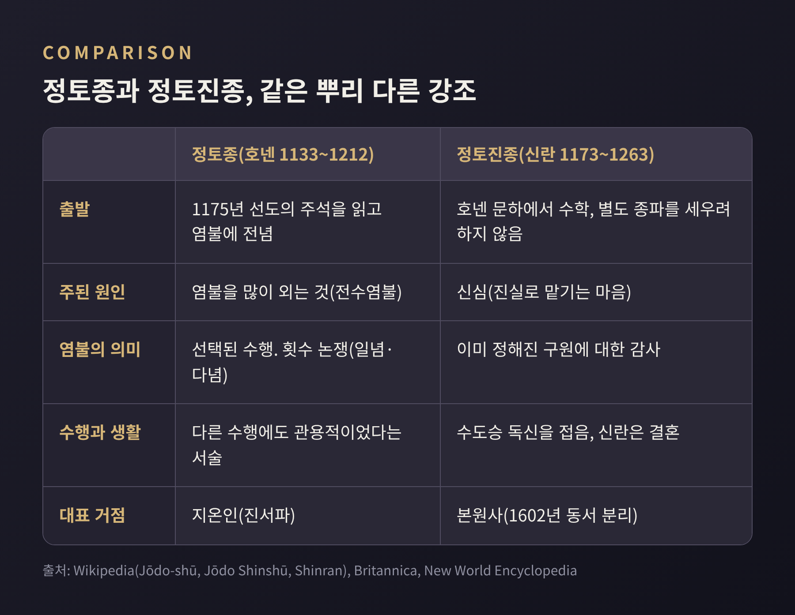
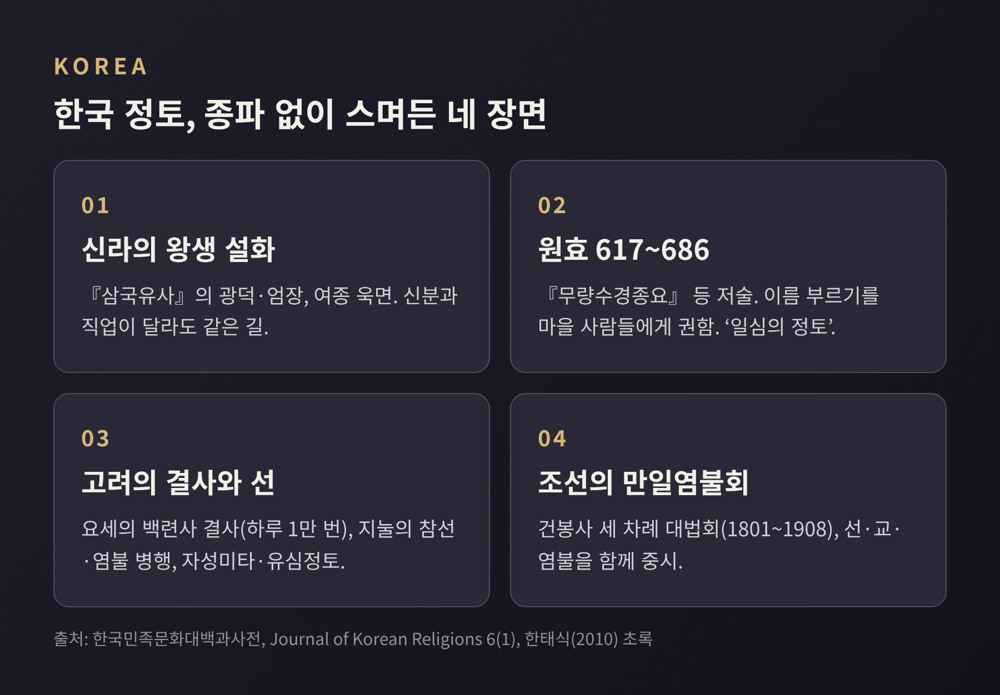

오늘은 정토신앙과 아미타불 신앙이 어떻게 동아시아 전역으로 퍼졌는지 정리해 보려 합니다.
핵심은 '내 힘으로 깨닫는 길' 곁에 '부처의 서원에 의지하는 길'이 나란히 놓였다는 점입니다.
이 글은 신앙의 옳고 그름을 따지지 않고, 비교종교학의 눈으로 역사와 교리를 살펴봅니다.
정토신앙은 아미타불이 다스리는 서쪽의 청정한 세계, 극락에 태어나기를 바라는 신앙입니다.
한국민족문화대백과사전은 이를 정토신앙, 아미타불 신앙, 미타신앙이라는 이름으로 함께 설명합니다.
아미타라는 이름에는 '한없는 빛'과 '한없는 수명'이라는 뜻이 함께 담겨 있습니다.
근본 경전은 정토삼부경입니다. 『무량수경』, 『아미타경』, 『관무량수경』을 가리킵니다.
대승경전 가운데 아미타불과 극락을 언급한 것은 200여 종에 이른다고 합니다.
기원은 인도 서북부 쪽으로 추정됩니다. 브리태니커는 경전이 대략 2세기 이전에 쓰인 것으로 봅니다.
다만 인도에서 아미타불 숭배의 증거가 많지 않다는 지적도 있고, 외부 사상의 영향을 논하는 학자도 있습니다.
관경은 중국에서 지어진 경전이라고 보는 근대 학자들도 있습니다. 기원은 아직 학계에서 정리된 문제가 아닙니다.

『무량수경』에는 법장이라는 보살의 이야기가 나옵니다.
법장은 본래 왕이었으나 왕위를 버리고 출가했다고 전합니다.
세자재왕불 아래에서 수많은 불국토를 본 뒤, 오랜 사유 끝에 서원을 세웠습니다.
이 법장이 훗날 아미타불이 된다는 것이 경전의 줄거리입니다.
서원은 흔히 48개로 알려져 있습니다.
가장 널리 읽히는 한역본이 48원이기 때문입니다. 산스크리트본 가운데는 47원으로 전하는 것도 있고, 판본마다 번호가 다릅니다.
그래서 '48'은 가장 대중적인 판본의 숫자라고 이해하시면 정확합니다.
그중 중심은 18번째 원, 이른바 '본원'입니다.
내용을 풀면 이렇습니다. 진심으로 믿고 극락에 태어나길 바라는 이가 내 이름을 열 번만 불러도 반드시 왕생하게 하겠다는 약속입니다.
'열 번 부름'이냐 '열 번 생각함'이냐를 두고 번역과 해석이 갈리는 대목이기도 합니다.
여기에는 단서가 하나 붙어 있습니다.
오역죄를 지은 이와 정법을 비방한 이는 제외한다는 조항입니다.
중국의 선도는 이를 악행을 막으려는 방편으로 읽었고, 그런 이들도 결국 포섭된다고 풀었습니다.
이 조항을 어떻게 읽을지는 전통 안에서도 입장이 나뉩니다.
경전 안에도 결이 다른 두 흐름이 있습니다.
브리태니커는 긴 판본이 선행을, 짧은 판본이 믿음과 헌신을 더 강조한다고 설명합니다.
타력이라는 말이 처음부터 하나의 교리로 굳어 있었던 것은 아니라는 뜻입니다.
중국에서 정토는 한 사람의 발명이 아니라 몇 세대에 걸친 해석이 쌓여 자리를 잡았습니다.
먼저 혜원(334~416)입니다.
전승에 따르면 402년 여산에서 123명의 문사가 모여 아미타불을 예배하고 서방 왕생을 서원했습니다.
이 모임이 훗날 '백련사'로 불렸고, 정토 전통은 이를 출발점으로 삼습니다.
그런데 학계의 시선은 조금 다릅니다.
찰스 존스는 당시 의식문이 '서쪽'을 말하면서도 극락을 명시하지 않았다고 지적합니다.
혜원 자신의 명상도 부처의 땅에 태어나기보다 지금의 부처들을 보는 데 목적이 있었다고 합니다.
정토의 첫 번째 조사로 추대한 것은 약 500년 뒤의 일입니다.
그래서 혜원은 '정토의 시조'라는 전통적 서술과 '후대가 만든 서사'라는 비판적 서술이 함께 놓인 인물입니다.
타력이라는 말을 본격적으로 쓴 이는 담란입니다.
위키백과는 담란의 생몰을 476~554년으로 적으면서도 542년에 66세로 입적했다고 함께 적어, 소스 안에서도 연도가 엇갈립니다.
전승에 따르면 그는 도교의 불로장생을 구하다가 보리류지를 만나 정토로 돌아섰다고 합니다. 모치즈키 신코처럼 이 일화를 의심하는 학자도 있습니다.
담란은 『왕생론주』에서 난행도와 이행도를 대비했습니다.
수행으로 나아가는 길은 육로를 걷는 여행에, 왕생의 길은 배로 물을 건너는 일에 비유했습니다.
왕생이 자기 노력이 아니라 아미타의 원력에 달려 있다는 생각을 정토 맥락에서 처음 말한 사람으로 평가됩니다.
도작(562경~645)은 여기에 시대 인식을 더했습니다.
자신이 사는 때를 법이 쇠퇴하는 말법의 시대로 보았고, 이때는 스스로 닦는 길이 더욱 힘들다고 판단했습니다.
그래서 성도문과 정토문을 가르고, 정토문만이 유효하다고 결론지었습니다.
하루 7만 번 염불했다고 전해지며, 염주가 귀해 콩이나 참깨로 횟수를 세도록 권했다는 일화도 남아 있습니다.
선도(613~681)는 장안에서 30여 년 동안 백정과 술장수를 포함한 모든 계층의 재가자를 가르쳤다고 전합니다.
그는 입으로 이름을 부르는 칭명을 핵심 수행으로 삼았고, 열 번의 생각(십념)을 '입으로 이름을 외움'으로 풀이한 인물로 평가됩니다.
다만 선도의 중심이 칭명이었는지 관상이었는지는 학자마다 의견이 다릅니다.

일본에서 정토는 천태종 승려들을 통해 먼저 들어왔습니다.
겐신(942~1017)의 『왕생요집』이 대표적입니다.
일본에서는 11세기 중엽을 말법의 시작으로 계산했고, 이런 시대 감각이 정토의 호소력과 맞물렸습니다.
이 흐름을 하나의 독립된 종파로 세운 이가 호넨(1133~1212)입니다.
호넨은 히에이산의 천태 승려였습니다.
1175년 선도의 관경 주석을 읽고 산을 내려와 오직 염불에 전념했다고 전합니다.
정토종은 이 해를 개종의 해로 삼습니다.
1198년에 쓴 『선택본원염불집』이 그의 주저입니다.
불교 전체를 성도문과 정토문으로 나누고, 보통 사람에게 성도문은 사실상 어렵다고 보았습니다.
그래서 본원에 대한 신뢰와 염불을 택했다는 논리입니다.
하루 1만 번에서 시작해 6만 번까지 늘리라고 권했으나, 신심 있는 몇 번으로도 충분하다는 말도 남겨 '한 번이면 되는가, 여러 번이어야 하는가'라는 논쟁이 일었습니다.
반발도 거셌습니다.
1204년과 1205년 히에이산 승려들과 고후쿠지가 전수염불의 금지를 청했습니다.
1207년에는 고토바 천황의 금지령으로 호넨이 유배되고 제자 네 명이 처형되었습니다. 신란도 이때 유배되었습니다.
비판자 묘에는 호넨의 가르침이 보리심을 버렸다고 비판했습니다.
옹호와 비판이 함께 기록되어 있다는 점을 기억해 두시면 좋겠습니다.
신란(1173~1263)은 이 가르침을 한 걸음 더 밀고 나갔습니다.
신란에게 구원의 원인은 염불의 횟수가 아니라 신심, 곧 '진실로 맡기는 마음'이었습니다.
이 신심조차 노력의 결과가 아니라 아미타의 서원이 주는 선물이라고 보았습니다.
그래서 염불은 공덕을 쌓는 행위가 아니라, 이미 정해진 구원에 대한 감사로 해석됩니다.
호넨에게 염불이 선택된 수행이었다면, 신란에게는 감사의 표현이었습니다. 예전엔 '무엇을 하는가'가 물음이었고, 이제는 '무엇에 맡기는가'가 물음이 된 셈입니다.
신란은 수도승의 독신을 접고 결혼했으며, 사원과 종파를 따로 세우지도 않았습니다.
간토에서 약 20년간 농민, 어민, 무사 계층과 어울렸다고 전합니다. 결혼 시기는 1203~1207년경이라는 서술과 1210년이라는 서술이 엇갈립니다.
『탄이초』에 전하는 '선인도 왕생하는데 하물며 악인이랴'라는 구절은 오늘까지도 해석의 대상입니다.

이후 진종은 렌뇨(1415~1499) 시대에 크게 조직되었습니다.
15세기 가가 지방에서는 진종 신도들이 지역 다이묘를 몰아내고 약 한 세기 동안 통치하기도 했습니다.
1602년에는 본원사가 동서로 갈라졌는데, 이를 도쿠가와의 분할 정책으로 보는 이와 기존 분열의 추인으로 보는 이가 있습니다.
한국에서는 정토종이라는 독립 종파가 세워진 적이 없습니다.
한국민족문화대백과사전은 삼국시대에 경전과 수행법이 들어왔으나 정토교나 정토종이 성립된 적은 없다고 기록합니다.
한태식 교수도 정토 사상과 실천이 워낙 널리 퍼져 별도의 학파가 형성되지 않았다고 정리합니다.
신라의 모습은 『삼국유사』의 왕생 설화에 잘 남아 있습니다.
광덕은 신을 삼아 생계를 이으며, 엄장은 농사를 지으며 염불했습니다.
경덕왕 때 아간 귀진의 여종 욱면은 집안일을 마친 뒤 마당에서 염불하다 왕생했다고 전합니다.
신분과 직업이 달라도 같은 길 위에 설 수 있다는 이야기입니다.
원효(617~686)는 이 흐름의 중심에 있습니다.
『무량수경종요』와 『아미타경소』를 남겼고, 마을을 다니며 노래와 춤으로 불교를 전하며 이름을 부르는 단순한 실천을 가르쳤다고 전합니다.
JKR 2015년 특집에 소개된 연구에 따르면 원효는 '일심의 정토'를 근거로 모든 중생의 왕생을 설명했습니다.
담란과 도작이 난행과 말법을 앞세운 것에 비해 낙관적인 입장이라는 평가입니다.
고려와 조선으로 오면서 정토는 선과 가까워졌습니다.
고려의 요세는 백련사 결사에서 매일 아미타 명호를 1만 번 부르는 일과를 삼았고, 지눌은 참선과 염불을 함께 닦자고 했습니다.
조선 후기에는 건봉사에서 세 차례 만일염불회가 열렸습니다. 마지막은 1881년에 시작해 1908년에 끝났다고 합니다.
오늘날 한국 사찰에서는 관음신앙이 더 활발하지만, 장례와 재의식에서는 나무아미타불을 부르고 『아미타경』을 읽는다고 합니다.

겉으로는 대조적입니다. 선은 스승 아래서 스스로 닦아 깨닫는 길을, 정토는 서원에 의지하는 길을 내세웁니다.
그러나 동아시아의 실제 모습은 단순한 양자택일이 아니었습니다.
중국의 영명연수(904~975)는 선과 정토를 함께 닦는 길을 가르쳤다고 전해집니다.
명대에는 아미타 이름을 화두로 삼는 염불 공안도 퍼졌습니다.
한국에서는 지눌, 나옹, 휴정을 거치며 '자성미타, 유심정토', 곧 아미타불이 곧 내 마음이라는 해석이 이어졌습니다.
한국민족문화대백과사전은 염불을 타력신앙으로 설명하면서도, 법신을 관하는 방식에는 자력의 성격이 있다고 덧붙입니다.
같은 책에는 염불 횟수와 예배 횟수에 따라 극락의 등급을 나누는 9품염불도 소개됩니다.
자력과 타력은 칼로 자른 듯한 이분법이라기보다 스펙트럼에 가깝다고 읽을 근거가 되는 대목입니다.
물론 비판의 목소리도 있었습니다.
선 쪽의 비판자가 정토를 이원론적이라 본 문헌이 전합니다.
반대로 정토 쪽에서는 스스로 닦는 길이 이 시대에는 닿기 어렵다고 보았습니다.
어느 쪽이 맞는지는 종교학이 판정할 일이 아닙니다. 다만 두 입장이 한 문화권 안에서 오래 공존했다는 사실은 분명합니다.
정토신앙이 퍼진 과정은 한 줄로 요약됩니다. 어려운 길 곁에 쉬운 길이 놓이면서, 수행할 여력이 없던 이들에게도 문이 열렸습니다.
호넨이 말한 '성도문이 닿기 어렵다'는 인식은 말법이라는 시대 감각과 맞물려 있었습니다.
한계도 분명히 적어 두어야 합니다.
혜원처럼 후대에 서사가 덧입혀진 인물이 있고, 경전의 번역자와 판본, 관경의 기원을 둘러싼 논쟁도 아직 남아 있습니다.
이 글이 많이 기대 온 위키백과 같은 2차 자료의 수치도 시점이 불분명해, 신자 수 같은 통계는 일부러 적지 않았습니다.
정리하면 이렇습니다.
정토신앙은 타력이라는 하나의 단어로 설명되지만, 실제로는 경전의 두 흐름, 시대 인식, 정치적 갈등, 선과의 만남이 겹쳐 만들어진 길고 다층적인 이야기입니다.
"구원의 힘이 어디에 있는가"라는 물음이 이 역사 전체를 관통합니다.
다음에 절의 극락전 앞에 서게 되신다면, 그 앞에 놓인 오랜 질문 하나를 떠올려 보셔도 좋겠습니다.